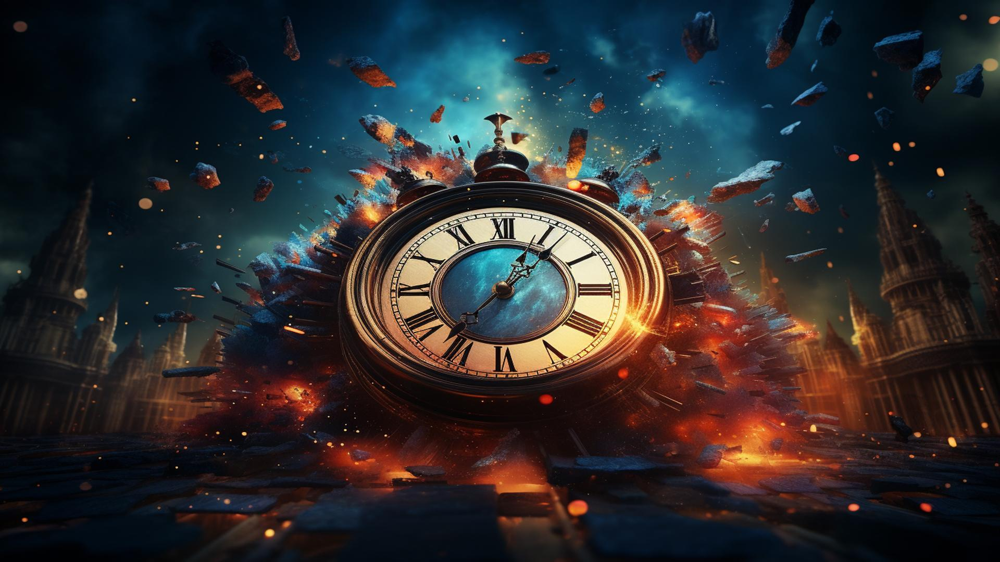

In January 2025, the Bulletin of the Atomic Scientists moved the hands of the Doomsday Clock to ninety seconds before midnight—the closest point to symbolic catastrophe since the clock’s creation. While this annual update often makes headlines and briefly captures public attention, the meaning behind the clock is frequently misunderstood.
Yet in a world increasingly defined by geopolitical instability and rapidly evolving technologies, this symbolic gesture carries more weight than ever.
What Is the Doomsday Clock?
The Doomsday Clock was established in 1947 by scientists who had worked on the Manhattan Project. The sobering reality of what they experienced led to a new understanding of the destructive power they had unleashed. Created by the Bulletin of the Atomic Scientists, the clock was designed as a visual metaphor for how close humanity is to self-destruction.
Midnight represents a full-scale global catastrophe, while the number of minutes or seconds to midnight indicates how close we are to such an event, as judged by leading experts.
Who Decides What Time It Is?
The time on the clock is not determined by a mathematical formula, but by decisions of the Bulletin’s Science and Security Board, which includes scientists, physicists, climatologists, policy scholars, and other global experts. Each year, they assess current events and global trends to decide whether the hands should be moved forward, back, or stay where they are. The goal is not to predict disaster, but to signal how human actions, or inactions, are pushing us closer—or pulling us back—from existential threats.
Why Are We at 90 Seconds from Midnight in 2025?
This year’s decision to set the clock at 90 seconds before midnight reflects a world in which multiple crises are colliding at the same time. The threat of nuclear conflict remains acute. The continuing war in Ukraine has brought nuclear issues back into focus, while tensions in the Middle East and the breakdown of long-standing arms control treaties add to global insecurity.
At the same time, advances in artificial intelligence, cyberweapons, and biological technologies are reshaping the global landscape in ways that outpace regulatory oversight. The rapid development and deployment of generative AI systems, in particular, have raised concerns about misinformation, autonomous weaponry, and unforeseen consequences. These emerging risks are unfolding against a backdrop of political fragmentation, mistrust in public institutions, and the erosion of democratic norms—conditions that undermine the very cooperation needed to respond to existential threats.
The Value of Metaphors
For all its simplistic symbolism, the Doomsday Clock serves a vital function. It provides a clear and urgent reminder that a global catastrophe is not a distant, abstract possibility. It is a clear and present danger that demands immediate attention and action. Critics of the clock sometimes argue that it is alarmist or lacks precision.
But its purpose is not to make precise predictions—it is to create a clear picture of where we stand in general. It forces us to confront uncomfortable truths and ask serious questions about how we govern ourselves, how we treat our planet, and what values we place on the future.
What Could Move the Clock Back?
The clock has not always moved forward. When the Cold War ended in 1991 and significant arms control treaties were established, it was set back to seventeen minutes before midnight—a symbol of what is possible when nations act in concert. That high mark remains a reminder that progress is possible.
Renewing arms control efforts, regulating emerging technologies, and restoring trust in science and government are not easy tasks. However, the current proximity to midnight does not mean all is lost. Rather, it highlights the urgency of redoubling our efforts toward finding solutions.
Why the Clock Still Matters
The Doomsday Clock remains one of the most striking and enduring symbols of humanity’s vulnerability. While some may question its continuing relevance, its ability to frame existential threats in terms people can easily grasp remains valuable. It makes the abstract urgent. It makes the complex visible. And it reminds us that catastrophe is not inevitable if we act to prevent it.
The world is not short on warnings. What it lacks, too often, is the will to listen and respond. The clock is not just for governments or scientists—it exists for all of humanity. Every time it is set provides a fresh opportunity to consider how we can move it back.
Conclusion
Today’s challenges demand urgent attention. To ignore the risks they present threatens our future, and that of the planet we live on. Recognizing the significance of the Doomsday Clock is an important step toward confronting the dangers it represents.
At Our Planet Project Foundation, we are committed to encouraging bold action to move humanity away from the brink.